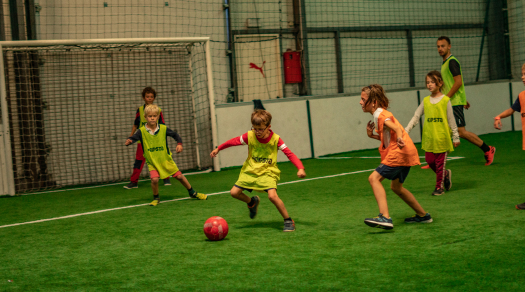

<section class="offres-container">
    <div class="grid-wrapper">
        <div class="grid-container">
            <div routerLink="/kid-birthday">
                <h2> Stage kid</h2>
                <div>
                    <p>
                        <span>+</span> 6 à 8 équipes qui s'affronte pour remporter la <strong>coupe</strong> 
                    </p>
                    <p>
                        <span>+</span> Tout le plaisir du <strong>football</strong> sans les inconvénients : un maximum de ballons touchés et un <strong>maximum</strong> de buts - jusqu'à plusieurs dizaines par partie !
                    </p>
                    <p> 
                        <span>+</span> Des matchs <strong>toute l’année</strong>
                    </p>
                    <p>
                        <span>+</span>  Le  <strong>fair-play</strong> avant tout : pas de tacle, pas de contact et l'esprit de convivialité d'autant plus <strong>renforcé</strong> lors de la 3ème mi-temps au sports bar !
                    </p>
                    <p> 
                        <span>+</span>  Un sport permettant se défouler sur une <strong>courte</strong> durée avec ses potes !
                    </p>
                </div>
            </div>
            <div class="img-container" routerLink="/kid">
                
            </div>
            <div routerLink="/kid">
                <h2>Réserver</h2>
            </div>
        </div>
        <app-map-icon></app-map-icon>
    </div>
            
</section>